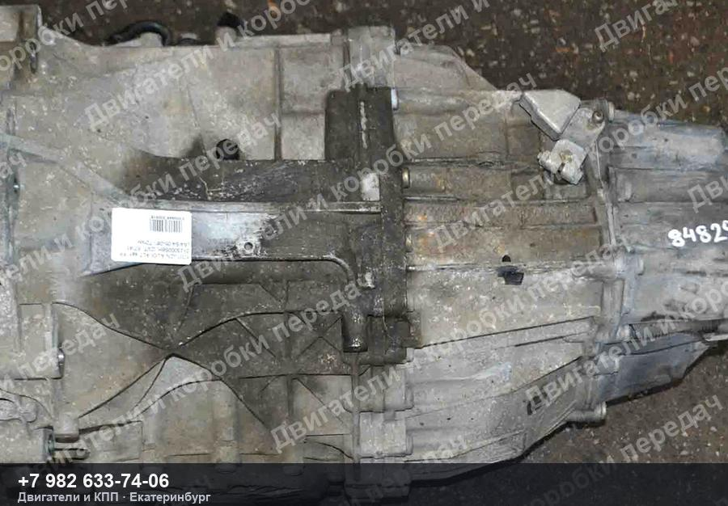
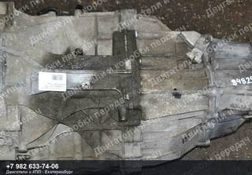
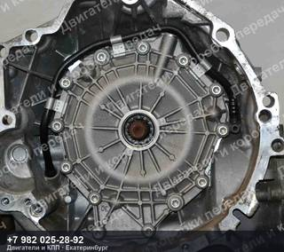
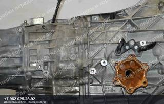
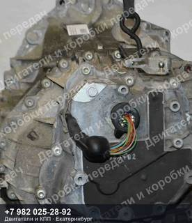
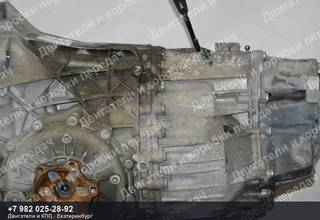
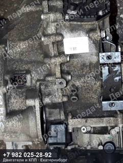
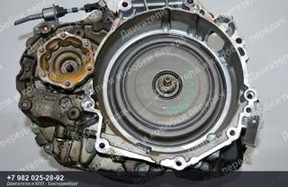
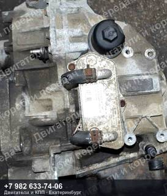
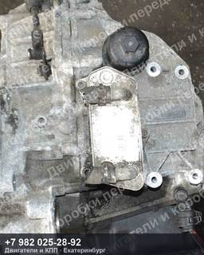

Контрактный вариатор Audi A4/S4
60 000 ₽
Контрактный вариатор Audi A4/S4 — двигатель ALT, пробег 72 000 км, код JZN.
| Марка | AUDI |
| Модель | A4/S4 |
| Двигатель | ALT |
| Пробег | 72 000 км |
| Тип | Вариатор |
| Номер детали | JZN |
| OEM-номера | 01J300051S, 01J300051SV, 01J300051SX, 01J300058H, 01J300058HV, 01J300058HX |
| Состояние | Б/у |
| Артикул | ДК-593823 |
Гарантия на проверку и установку · бесплатная доставка до транспортной компании ·
отправим фото и видео агрегата до оплаты
Контрактный вариатор Audi A4/S4 — что важно знать
Агрегат снят с автомобиля AUDI A4/S4 пробег 72 000 км. Двигатель ALT. Номер детали JZN. Подходящие OEM-номера: 01J300051S, 01J300051SV, 01J300051SX, 01J300058H, 01J300058HV, 01J300058HX.
Перед отправкой агрегат проверяем и фотографируем. Пришлём фотографии и видео работы именно этого экземпляра, поможем проверить совместимость по VIN вашего автомобиля. Отправка из Екатеринбурге до транспортной компании — бесплатно, дальше — любой ТК до вашего города.
Похожие агрегаты Audi

Контрактный робот DSG Audi A1
двигатель CAX/CAXA, пробег 111 000 км, код NUA
86 500 ₽

Контрактный робот DSG Audi A3/S3
двигатель AXX, пробег 89 000 км, код HRW
46 000 ₽

Контрактный робот DSG Audi A3/S3
двигатель BYT, пробег 121 000 км, код KDD
60 000 ₽

Контрактный робот DSG Audi A3/S3
двигатель BZB, пробег 125 000 км, код KNG
60 000 ₽